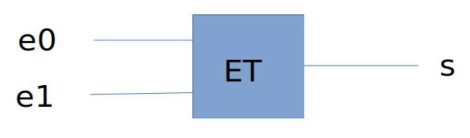
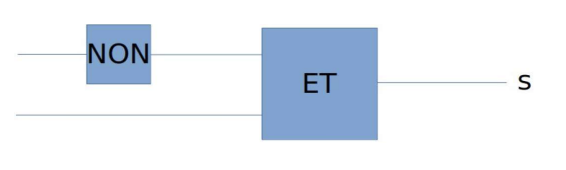
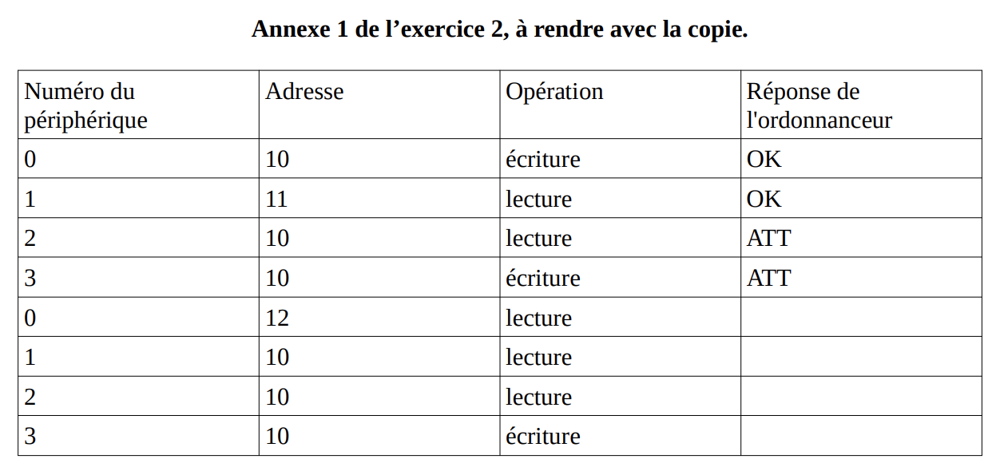
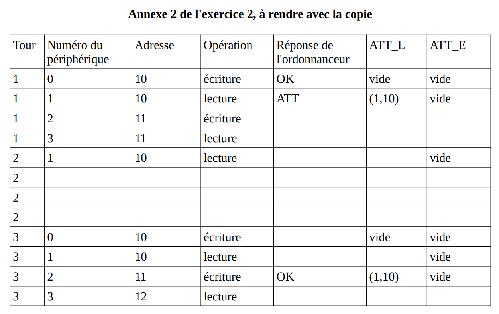
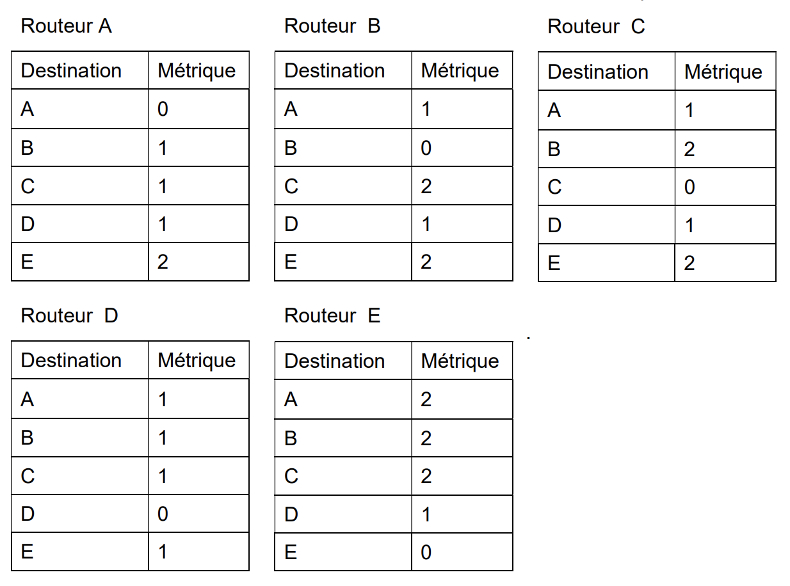
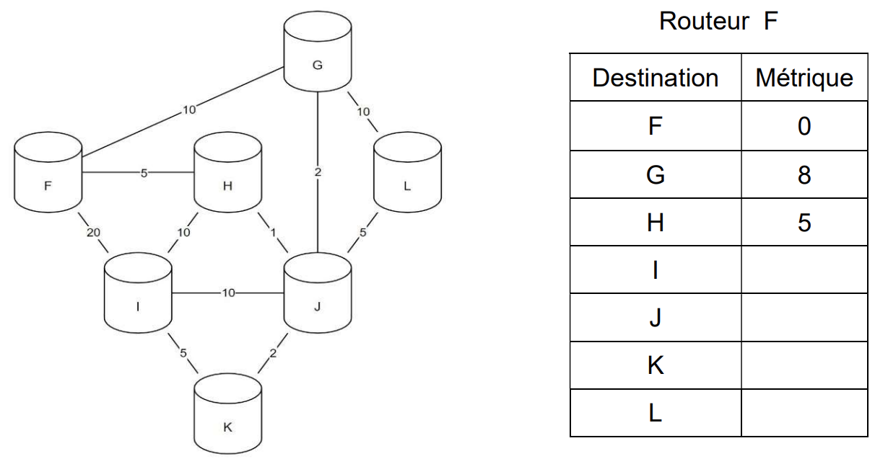
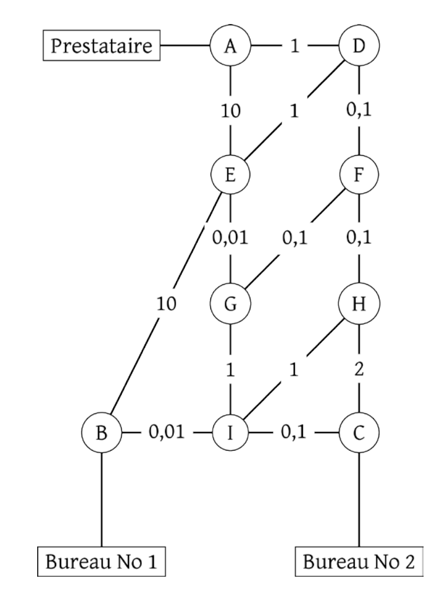
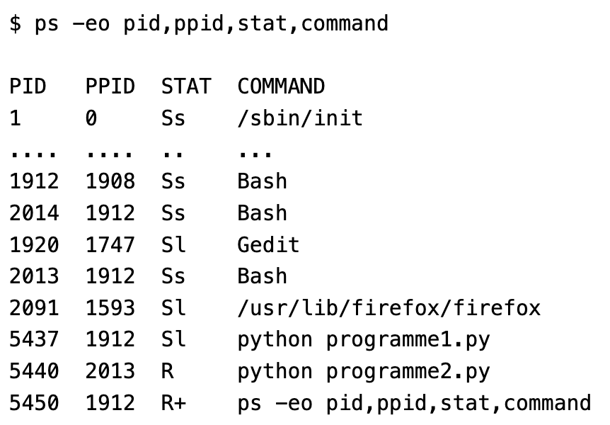
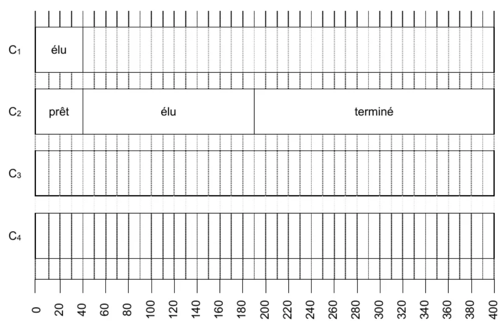

architecture
Bac 2021 Centres étrangers 2: Exercice 3
Thèmes abordés : conversion décimal/binaire, table de vérité, codage des caractères
binaire logique ascii xor chiffrement
L’objectif de l’exercice est d’étudier une méthode de cryptage d’une chaîne de caractères à l’aide du codage ASCII et de la fonction logique XOR.
1. Le nombre 65, donné ici en écriture décimale, s’écrit 01000001 en notation binaire. En détaillant la méthode utilisée, donner l’écriture binaire du nombre 89.
2. La fonction logique OU EXCLUSIF, appelée XOR et représentée par le symbole $\bigoplus$, fournit une sortie égale à 1 si l’une ou l’autre des deux entrées vaut 1 mais pas les deux.
On donne ci-contre la table de vérité de la fonction XOR:

Si on applique cette fonction à un nombre codé en binaire, elle opère bit à bit.

3. On donne, ci-dessous, un extrait de la table ASCII qui permet d’encoder les caractères de A à Z. On peut alors considérer l’opération XOR entre deux caractères en effectuant le XOR entre les codes ASCII des deux caractères. Par exemple : ‘F’ XOR ‘S’ sera le résultat de $01000110 \bigoplus 01010011$.

Pour cela, on dispose d’un message à crypter et d’une clé de cryptage de même longueur que ce message. Le message et la clé sont composés uniquement des caractères du tableau ci-dessus et on applique la fonction XOR caractère par caractère entre les lettres du message à crypter et les lettres de la clé de cryptage.
Par exemple, voici le cryptage du mot ALPHA à l’aide de la clé YAKYA :

xor_crypt(message, cle) qui prend en paramètres deux
chaînes de caractères et qui renvoie la liste des entiers correspondant au
message crypté.
Aide :
- On pourra utiliser la fonction native du langage Python
ord(c)qui prend en paramètre un caractère c et qui renvoie un nombre représentant le code ASCII du caractère c. - On considère également que l’on dispose d’une fonction écrite
xor(n1,n2)qui prend en paramètre deux nombres n1 et n2 et qui renvoie le résultat de n1 ⊕ n2.
4. On souhaite maintenant générer une clé de la taille du message à partir d’un mot quelconque. On considère que le mot choisi est plus court que le message, il faut donc le reproduire un certain nombre de fois pour créer une clé de la même longueur que le message.
Par exemple, si le mot choisi est YAK pour crypter le message ALPHABET, la clé sera YAKYAKYA.)
Créer une fonction generer_cle(mot,n) qui renvoie la clé de longueur n à partir de la chaîne de caractères mot.
5. Recopier et compléter la table de vérité de $(𝑬𝟏 \bigoplus 𝑬𝟐) \bigoplus 𝑬𝟐$.

Bac 2022 Polynesie: Exercice 2
Cet exercice traite du thème « architecture matérielle », et principalement d’ordonnancement et d’expressions booléennes.
ordonnancement logique
Un système est composé de 4 périphériques, numérotés de 0 à 3, et d’une mémoire, reliés entre eux par un bus auquel est également connecté un dispositif ordonnanceur. À l’aide d’un signal spécifique envoyé sur le bus, l’ordonnanceur sollicite à tour de rôle les périphériques pour qu’ils indiquent le type d’opération (lecture ou écriture) qu’ils souhaitent effectuer, et l’adresse mémoire concernée.
Un tour a lieu quand les 4 périphériques ont été sollicités. Au début d’un nouveau tour, on considère que toutes les adresses sont disponibles en lecture et écriture.
Si un périphérique demande l’écriture à une adresse mémoire à laquelle on n’a pas encore accédé pendant le tour, l’ordonnanceur répond “OK” et l’écriture a lieu. Si on a déjà demandé la lecture ou l’écriture à cette adresse, l’ordonnanceur répond “ATT” et l’opération n’a pas lieu.
Si un périphérique demande la lecture à une adresse à laquelle on n’a pas encore accédé en écriture pendant le tour, l’ordonnanceur répond “OK” et la lecture a lieu. Plusieurs lectures peuvent avoir donc lieu pendant le même tour à la même adresse.
Si un périphérique demande la lecture à une adresse à laquelle on a déjà accédé en écriture, l’ordonnanceur répond “ATT” et la lecture n’a pas lieu.
Ainsi, pendant un tour, une adresse peut être utilisée soit une seule fois en écriture, soit autant de fois qu’on veut en lecture, soit pas utilisée.
Si un périphérique ne peut pas effectuer une opération à une adresse, il demande la même opération à la même adresse au tour suivant.
Question 1
Le tableau donné en annexe 1 indique, sur chaque ligne, le périphérique sélectionné, l’adresse à laquelle il souhaite accéder et l’opération à effectuer sur cette adresse. Compléter dans la dernière colonne de cette annexe, à rendre avec la copie, la réponse donnée par l’ordonnanceur pour chaque opération.
On suppose dans toute la suite que :
- le périphérique 0 écrit systématiquement à l’adresse 10 ;
- le périphérique 1 lit systématiquement à l’adresse 10 ;
- le périphérique 2 écrit alternativement aux adresses 11 et 12 ;
- le périphérique 3 lit alternativement aux adresses 11 et 12 ;
Pour les périphériques 2 et 3, le changement d’adresse n’est effectif que lorsque l’opération et réalisée.
Question 2
On suppose que les périphériques sont sélectionnés à chaque tour dans l’ordre 0 ; 1 ; 2 ; 3. Expliquer ce qu’il se passe pour le périphérique 1.
Les périphériques sont sollicités de la manière suivante lors de quatre tours successifs :
- au premier tour, ils sont sollicités dans l’ordre 0 ; 1 ; 2 ; 3 ;
- au deuxième tour, dans l’ordre 1 ; 2 ; 3 ; 0 ;
- au troisième tour, 2 ; 3 ; 0 ; 1 ;
- puis 3 ; 0 ; 1 ; 2 au dernier tour.
- Et on recommence…
Question 3
A. Préciser pour chacun de ces tours si le périphérique 0 peut écrire et si le périphérique 1 peut lire.
B. En déduire la proportion des valeurs écrites par le périphérique 0 qui sont effectivement lues par le périphérique 1.
On change la méthode d’ordonnancement : on détermine l’ordre des périphériques au cours d’un tour à l’aide de deux listes d’attente ATTL_L et ATT_E établies au tour précédent.
Au cours d’un tour, on place dans la liste ATT_L toutes les opérations de lecture mises en attente, et dans la liste d’attente ATT_E toutes les opérations d’écriture mises en attente.
Au début du tour suivant, on établit l’ordre d’interrogation des périphériques en procédant ainsi :
- on interroge ceux présents dans la liste ATT_L, par ordre croissant d’adresse,
- on interroge ensuite ceux présents dans la liste ATT_E, par ordre croissant d’adresse,
- puis on interroge les périphériques restants, par ordre croissant d’adresse.
Question 4
Compléter et rendre avec la copie le tableau fourni en annexe 2, en utilisant l’ordonnancement décrit ci-dessus, sur 3 tours.
Les colonnes e0 et e1 du tableau suivant recensent les deux chiffres de l’écriture binaire de l’entier n de la première colonne.
| nombre n | écriture binaire de n sur deux bits | e1 | e0 |
|---|---|---|---|
| 0 | 00 | 0 | 0 |
| 1 | 01 | 0 | 1 |
| 2 | 10 | 1 | 0 |
| 3 | 11 | 1 | 1 |
L’ordonnanceur attribue à deux signaux sur le bus de données les valeurs de e0 et e1 associées au numéro du circuit qu’il veut sélectionner. On souhaite construire à l’aide des portes ET, OU et NON un circuit pour chaque périphérique.
Chacun des quatre circuits à construire prend en entrée deux signaux e0 et e1, le signal de sortie s valant 1 uniquement lorsque les niveaux de e0 et e1 correspondent aux bits de l’écriture en binaire du numéro du périphérique correspondant.
Par exemple, le circuit ci-dessous réalise la sélection du périphérique 3. En effet, le signal s vaut 1 si et seulement si e0 et e1 valent tous les deux 1.

470 × 138
Question 5
A. Recopier sur la copie et indiquer dans le circuit ci-dessous les entrées e0 et e1 de façon à ce que ce circuit sélectionne le périphérique 1.

566 × 170

1252 × 590

1252 × 788
Bac 2022 Metropole1: Exercice 3
Cet exercice porte sur les représentations binaires et les protocoles de routage.
binaire routage
Question 1
Une adresse IPv4 est représentée sous la forme de 4 nombres séparés par des points. Chacun de ces 4 nombres peut être représenté sur un octet.
A. Donner en écriture décimale l’adresse IPv4 correspondant à l’écriture binaire :
11000000.10101000.10000000.10000011
B. Tous les ordinateurs du réseau A ont une adresse IPv4 de la forme : 192.168.128._ _ _ , où seul le dernier octet (représenté par _ _ _ ) diffère. Donner le nombre d’adresses différentes possibles du réseau A.
Question 2
On rappelle que le protocole RIP cherche à minimiser le nombre de routeurs traversés (qui correspond à la métrique). On donne les tables de routage d’un réseau informatique composé de 5 routeurs (appelés A, B, C, D et E), chacun associé directement à un réseau du même nom obtenues avec le protocole RIP :

1234 × 916
B. Représenter graphiquement et de manière sommaire les 5 routeurs ainsi que les liaisons existantes entre ceux-ci.
Question 3
Le protocole OSPF est un protocole de routage qui cherche à minimiser la somme des métriques des liaisons entre routeurs.
Dans le protocole de routage OSPF le débit des liaisons entre routeurs agit sur la métrique via la relation : $metrique = \tfrac{10^8}{debit}$ dans laquelle le débit est exprimé en bit par seconde (bps).
On rappelle qu’un kbps est égal à $10^3$ bps et qu’un Mbps est égal à $10^6$ bps.
A. Recopier sur votre copie et compléter le tableau suivant :
| Débit | 100 kbps | 500 kbps | ? | 100 Mbps |
|---|---|---|---|---|
| Métrique associé | 1000 | ? | 10 | 1 |

1230 × 644
B. Indiquer le chemin emprunté par un message d’un ordinateur du réseau F à destination d’un ordinateur du réseau I. Justifier votre réponse.
C. Recopier et compléter la table de routage du routeur F.
D. Citer une unique panne qui suffirait à ce que toutes les données des échanges de tout autre réseau à destination du réseau F transitent par le routeur G. Expliquer en détail votre réponse.
Question 4 (sup hors bac)
A. Donner les caractéristiques du graphe de réseaux schématisé plus haut.
On donne cette fois le tableau constitué à partir de l’algorithme de Dijkstra, appliqué à ce même graphe de reseaux:
- le colonnes représentent les sommets à atteindre
- les lignes sont les sommets de départ
- On renseigne dans les cases la distance cumulée depuis le noeud F, jusqu’au noeud de la colonne, en passant par le noeud adjacent de la ligne. Par exemple, I peut être atteint en venant du noeud K avec une longueur de 13.
| G | H | I | J | K | L | |
|---|---|---|---|---|---|---|
| F | 5 | |||||
| G | ||||||
| H | 6 | |||||
| I | ||||||
| J | 8 | 8 | 11 | |||
| K | 13 | |||||
| L |
B. Représenter le graphe des chemins pour explorer depuis F les autres noeuds, en suivant le chemin le plus court.
C. Ce graphe représente l’arbre couvrant du graphe. Donner les caractéristiques de cet arbre.
D. Quel est le chemin le plus court pour aller de F à G?
E. Même question, mais cette fois pour aller de H à K.
bac 2024 metropole1 exercice 2
Cet exercice traite de protocoles de routage, de sécurité des communications et de base de données relationnelle.
routageUne agence de voyage propose des croisières en bateau. Chaque croisière a un nom unique et passe par quatre escales correspondant à des villes qui ont elles aussi des noms différents. Pour gérer les réservations de ses clients, l’agence utilise une base de données.
Partie A
L’agence de voyage possède deux bureaux distincts. Elle passe par un prestataire de service qui héberge sa base de données et utilise un système de gestion de base de données relationnelle. Vous trouverez ci-après un schéma du réseau entre les deux bureaux de l’agence de voyage et le prestataire. On peut y voir les différents routeurs (nommés de A à I) ainsi que le coût des liaisons entre eux.

Topologie du réseau
- Donner deux services rendus par un système de gestion de bases de données relationnelles.
Le protocole RIP (Routing Information Protocol) est un protocole de routage qui minimise le nombre de routeurs par lesquels les paquets transitent.
Le protocole OSPF (Open Shortest Path First) est un protocole de routage qui minimise le coût du transit des paquets. Ce coût s’evalue grâce à la loi:
$$cout = \tfrac{18^8}{Debit}$$- Donner la route suivie par une requête issue du bureau numéro 1 jusqu’au prestataire si on utilise le protocole RIP.
- Le debit d’une liaison, utilisé pour le calcul du coût, s’exprime en bits par seconde. Donner une définition de ce qu’est le débit
- Calculer le coût pour une liaison de débit 100 Mb par s. (fast ethernet)
- Donner les deux routes que pourrait suivre une requête issue du bureau numéro 2 jusqu’au prestataire si on utilise le protocole OSPF. Donner le coût de chaque route.
bac 2021 candidat libre exercice 3
cmd unixLa commande UNIX ps présente un cliché instantané des processus en cours d’exécution.
Avec l’option −eo pid,ppid,stat,command, cette commande affiche dans l’ordre l’identifiant du processus PID (process identifier), le PPID (parent process identifier), l’état STAT et le nom de la commande à l’origine du processus.
Les valeurs du champ STAT indique l’état des processus :
R : processus en cours d’exécution
S : processus endormi
Sur un ordinateur, on exécute la commande ps −eo pid,ppid,stat,command et on obtient un affichage dont on donne ci-dessous un extrait:

À l’aide de cet affichage, répondre aux questions ci-dessous.
- Quel est le nom de la première commande exécutée par le système d’exploitation lors du démarrage?
- Quels sont les identifiants des processus actifs sur cet ordinateur au moment de l’appel de la commande
ps? Justifier la réponse. - Depuis quelle application a-t-on exécuté la commande
ps? Donner les autres commandes qui ont été exécutées à partir de cette application. - Expliquer l’ordre dans lequel les deux commandes
python programme1.pyetpython programme2.pyont été exécutées. - Peut-on prédire que l’une des deux commandes
python programme1.pyetpython programme2.pyfinira avant l’autre?
bac 2021 candidat libre exercice 2 sujet 2
ordonnancementLes états possibles d’un processus sont : prêt, élu, terminé et bloqué.
Expliquer à quoi correspond l’état élu.
Proposer un schéma illustrant les passages entre les différents états.
On suppose que quatre processus C₁, C₂, C₃ et C₄ sont créés sur un ordinateur, et qu’aucun autre processus n’est lancé sur celui-ci, ni préalablement ni pendant l’exécution des quatre processus.
L’ordonnanceur, pour exécuter les différents processus prêts, les place dans une structure de données de type file. Un processus prêt est enfilé et un processus élu est défilé.
Parmi les propositions suivantes, recopier celle qui décrit le fonctionnement des entrées/sorties dans une file :
- Premier entré, dernier sorti
- Premier entré, premier sorti
- Dernier entré, premier sorti
On suppose que les quatre processus arrivent dans la file et y sont placés dans l’ordre C₁, C₂, C₃ et C₄.
Les temps d’exécution totaux de C₁, C₂, C₃ et C₄ sont respectivement 100 ms, 150 ms, 80 ms et 60 ms.
Après 40 ms d’exécution, le processus C₁ demande une opération d’écriture disque, opération qui dure 200 ms. Pendant cette opération d’écriture, le processus C₁ passe à l’état bloqué.
Après 20 ms d’exécution, le processus C₃ demande une opération d’écriture disque, opération qui dure 10 ms. Pendant cette opération d’écriture, le processus C₃ passe à l’état bloqué.
Sur la frise chronologique donnée en annexe (à rendre avec la copie), les états du processus C₂ sont donnés.
Compléter la frise avec les états des processus C₁, C₃ et C₄.

Annexe de l’exercice 2
On trouvera ci-dessous deux programmes rédigés en pseudo-code.
Verrouiller un fichier signifie que le programme demande un accès exclusif au fichier et l’obtient si le fichier est disponible.
| Programme 1 | Programme 2 |
|---|---|
| Verrouiller fichier_1 | Verrouiller fichier_2 |
| Calculs sur fichier_1 | Verrouiller fichier_1 |
| Verrouiller fichier_2 | Calculs sur fichier_1 |
| Calculs sur fichier_1 | Calculs sur fichier_2 |
| Calculs sur fichier_2 | Déverrouiller fichier_1 |
| Calculs sur fichier_1 | Déverrouiller fichier_2 |
| Déverrouiller fichier_2 | |
| Déverrouiller fichier_1 |